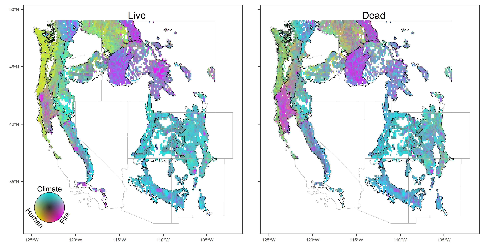
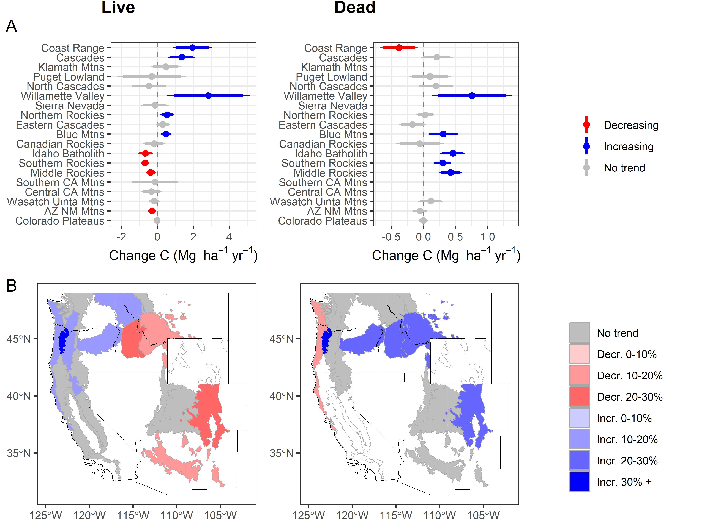
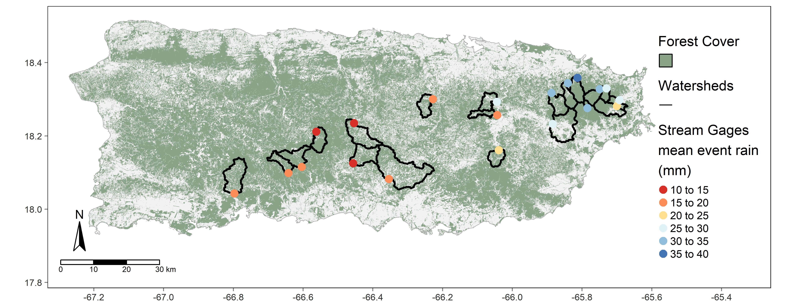
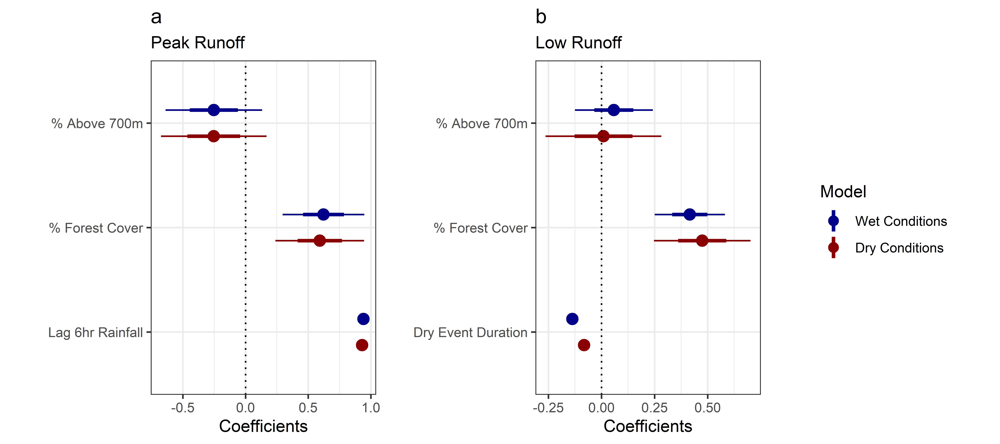
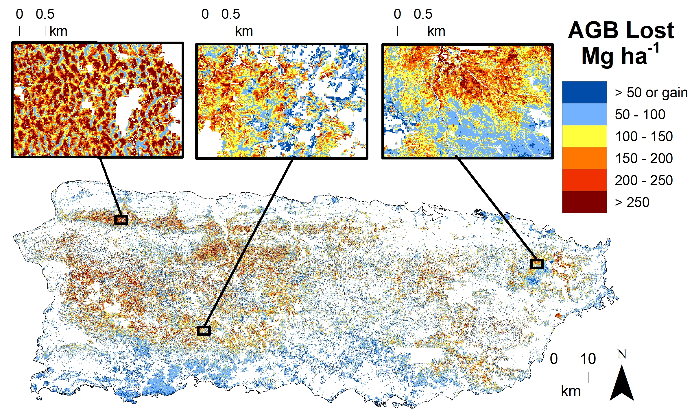

Postdoctoral Research
Western Fire and Forest Resilience Collaborative
I am a postdoctoral associate working as a part of the Western US Fire and Forest Resilience Collaborative (WFFRC), a project funded by the Gordon and Betty Moore Foundation. This project is focused on co-creating a research program among an interdisciplinary set of researchers, managers and policy makers that ensures the predictive science of fire ecology and forest resilience is sufficiently mature to support effective strategies for addressing the Western US fire crisis.
I am a team lead within the “Tracking Forests and Fire” working group, tasked with quantifying how fire regimes and resulting forest structure and function are changing across the western US. My responsibilities for this working group are to 1) develop and execute research methods that use remote sensing to track forest characteristics such as carbon and vegetation community composition, 2) determine how these characteristics have changed in response to fire and management, and 3) predict forest successional trajectories from recent fires. Results from this work will be used to calibrate simulation models of forests and fire.
I am also a member of the “Consequences for Ecosystem services” working group, which aims to quantify current and future consequences of fire for people, biodiversity, and ecosystem services essential to human well-being and economies. My role within this group is to 1) determine how fire has impacted forest carbon storage and water resources (i.e. streamflow, groundwater depths, lake volumes, and water quality) through the recent historical record, and 2) predict changes to water resources using forest and fire simulation model outputs. Together with my collaborators, I will compile water resource data and remote sensing indices for burned watersheds across the western US. We will use this dataset to evaluate how water resources have changed as a result of fires and to build a predictive statistical and machine learning model that uses projections of forests and fire characteristics to project future changes to water resources given climate, fire, and management scenarios.
Interior Alaska post-fire seedling regeneration
Forest carbon storage in the Western United States: distribution, drivers, and trends
I just wrapped up a project funded by the Environmental Defense Fund focusing on analyzing the distribution, trends, and drivers of forest carbon in the Western US (Hall et al. in press at Earth’s Future). My collaborators and I used USDA Forest Inventory and Analysis (FIA) survey data (2005-2019) compare carbon between 19 forested ecoregions. Using GIS and statistical analysis, we analyzed patterns in the spatial distribution of forest carbon and identified social and biophysical carbon drivers, including tree harvest, fire occurrence and severity, insect and disease presence, topography, and climate indices. We evaluated driver importance as well as driver relationships with carbon using machine learning models and a model interpretation technique rooted in game theory. Finally, we assessed ecoregion-level recent carbon trends using linear models.


PhD Research
My PhD research drew from principles in ecology, hydrology, and geography to identify the effects of forest disturbance from extreme events on carbon sequestration and streamflow in Puerto Rico.
Streamflow, forest cover, and drought in Puerto Rico
In Puerto Rico, streamflow provides over 80% of water used for human consumption, and limited water storage infrastructure has caused multiple water rationing periods during drought. To understand the relationships between forest cover, drought, and streamflow, my coauthors and I used hydrological and statistical techniques (Hall et al, 2022). We found that watersheds with high forest cover had consistently greater streamflow than deforested ones, even during periods of intense and prolonged drought. Our results demonstrated that forest cover, through increased water storage and infiltration, may lessen the impact of drought on streamflow in Puerto Rico.


Quantifying forest damage from Hurricane Maria
Hurricane María hit Puerto Rico in 2017, causing widespread forest damage. To estimate forest damage extent (e.g., AGB loss), my coauthors and I combined field data and Sentinel-2 optical satellite imagery (Hall et al. 2020) and determined that 23% of pre-hurricane forest AGB was lost. We evaluated risk factors associated with damage severity caused by Hurricane María using random forest decision trees and found that storm-related rainfall was a strong predictor of forest damage. Expected increases in hurricane-associated rainfall highlight the need to consider how such shifts, together with high-speed winds, will affect terrestrial ecosystems.

Relating forest damage to post-hurricane streamflow response
Finally, we tested whether forest cover and estimates of forest damage explain changes to Puerto Rican streamflow regimes after Hurricane María (Hall et al. in revision). Using statistical models, we found that nearly all watersheds experienced higher post-storm streamflow. Forest damage increased streamflow after the storm, and forests, however damaged, increase resistance to storm impacts on streamflow. On average, major changes to streamflow regimes lasted months, but residual changes remained for over a year. Our results demonstrate how interactions between forest damage and cover influence streamflow regimes and increase understanding of forest damage effects on watershed function.